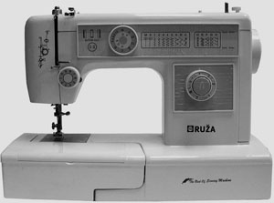

Šivanje je spajanje ili povezivanje dijelova tekstilnih i drugih plošnih materijala s pomoću igle i konca provlačenjem konca kroz materijal i tvorbom šivaćih bodova. Njime se ostvaruje niz prolazaka niti ili petlji konca kroz materijal (šivaći ubodi ili bodovi) u jednakim razmacima, pa se tako tvore rubovi i šavovi. Šav je spoj u kojem niz uboda spaja dva ili više slojeva materijala, a služi za spajanje dijelova šivanih proizvoda. Hrvatska tehnička enciklopedija donosi opsežan članak o jednome od najstarijih tekstilnih umijeća, kojega se početci datiraju u paleolitik.
U povijesti se rub materijala, tj. životinjske kože, umjesto iglom bušio oštrim predmetima poput trna, oštroga kamena, dijela kosti ili životinjskoga zuba, a kroz stvorene rupice provlačilo se liko biljaka ili tanke vrpce kože. Poslije su se pojavile metalne igle, isprva bez ušice, a potom s ušicom za provlačenje konca. Šivati se može ručno, samo uz pomoć šivaće igle, ili strojno, uz pomoć šivaćega stroja koji je izumljen pojavom industrijske revolucije u XIX. st.
U Hrvatskoj su u prošlosti djelovale domaće radinosti na principu jednostavnih manufaktura, a odjeća se ručnim šivanjem tkanina proizvodila u malim serijama. Uvođenjem strojnoga šivanja omogućeni su znatno čvršći i kvalitetniji šavovi, neusporedivo brže spajanje dijelova odjeće i poboljšan izgled šava. Dogradnjom elektromotora na šivaće strojeve brzina šivanja porasla je na više tisuća uboda u minuti. Poduzeće za proizvodnju šivaćih i alatnih strojeva Bagat, osnovano 1950. u Zadru, do kraja 1980-ih opskrbljivalo je šivaćim strojevima većinu jugoslavenskoga tržišta.

U hrvatskoj odjevnoj industriji danas dominiraju šivaći strojevi brzine šivanja od približno 5000 uboda u minuti. Najčešći su strojevi s ručnim vođenjem, uz porast broja šivaćih automata, agregata i NC-vođenih šivaćih strojeva s automatskim vođenjem izratka. Primjena šivaćih robota još nije prihvaćena zbog nesavršenosti robotičkih efektora za manipulaciju savitljivim tekstilnim materijalima i nedostatne umjetne inteligencije. Osim tehnike spajanja dijelova odjeće šivanjem, u hrvatskoj odjevnoj industriji sve se više rabe tehnike spajanja toplinskom kondukcijom i konvekcijom te ultrazvučne i visokofrekventne tehnike.
Zanima li vas tekstilna tehnologija, vrste prirodnih i umjetnih vlakana, u Hrvatskoj enciklopediji možete pronaći mnogobrojne zanimljivosti. Saznajte što su kevlar, keper i kašmir, a što makrame, tvid ili baršun.